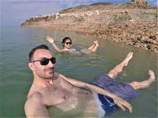
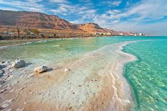

|  |  |
The Dead Sea is a salt lake bordered by Jordan to the east and Israel and the West Bank to the west. It lies in the Jordan Rift Valley, and its main tributary is the Jordan River.
Its surface and shores are 430.5 metres (1,412 ft) below sea level, Earth's lowest elevation on land. It is 304 m (997 ft) deep, the deepest hypersaline lake in the world. With a salinity of 342 g/kg, or 34.2% (in 2011), it is one of the world's saltiest bodies of water – 9.6 times as salty as the ocean – and has a density of 1.24 kg/litre, which makes swimming similar to floating.This salinity makes for a harsh environment in which plants and animals cannot flourish, hence its name. The Dead Sea's main, northern basin is 50 kilometres (31 mi) long and 15 kilometres (9 mi) wide at its widest point.
From Jerusalem, bus line 486 runs ca. 5 times during the day and stops at Masada Junction, from where it's a walk to the entrance and stops at the main resort of Ein Bokek. The fare is 42 NIS per person each way. From Tel Aviv, there is one daily bus to Masada and the Dead Sea, number 421.